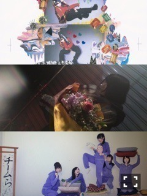
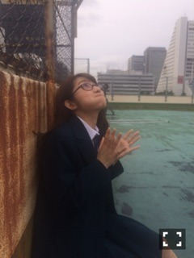
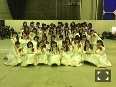

| 2016/01 02 Sat | パプリカ夢。688回目 |
新年あけましておめでとうございます。
みんなで輪になって年越しました！



↑2015年
外に触れてたくさん刺激を受けた一年でした
一昨年と去年の自分はだいぶ違いましたが、
今年はどうなるか
わからないけど、楽しもうと思います
去年と同じように
好きなことを追求していきつつ、
人との縁を大切にして
それを繋げていきたいです
まだ知らない場所の空気に触れて
視野を広げていく機会を
自分からはもちろん、
お仕事でもつくれたら幸せです、
個人的に、二十歳の節目の年に
相応しいことができたらいいなあ、と！！
まだまだ知られていないので、
たくさんの方に知っていただけるよう
がんばろう ！
大きな舞台も任せられる人間に！

紅白歌合戦。
4年ぶりに紅組優勝！
グループの一員として代表者の自覚を持って
それぞれいろんな場所で
まだ知られていないところにも
届くように活動しなければ、
と気が引き締まりました。
次に繋げることが大事！
緊張しましたが、バナナマンさんが
いてくださったので安心してました。
CDTV、2曲も嬉しかった！
去年アンダーで何空を歌ったから、
変わったことを改めて実感できた！
2016年も、応援よろしくお願いします！！
まりか
コメント(651)
2016/01/02 20:36